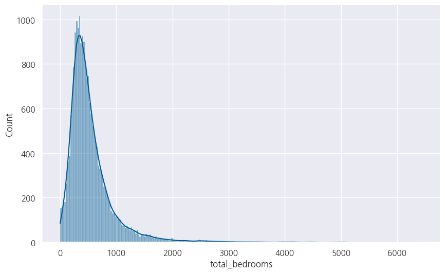
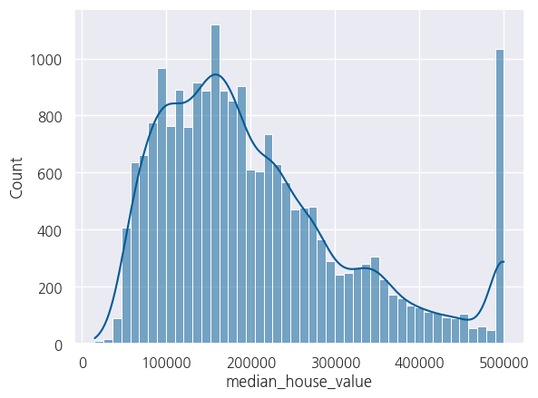
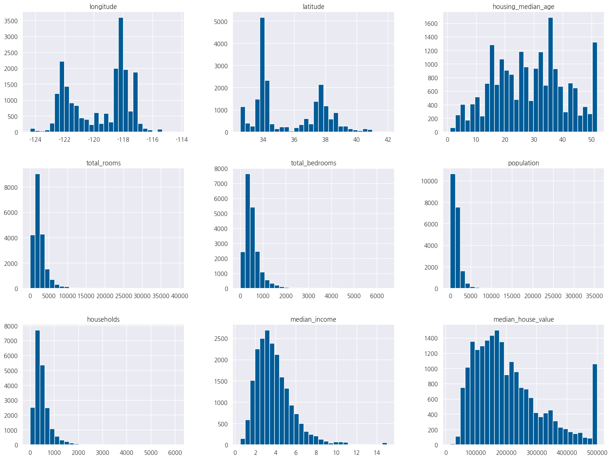
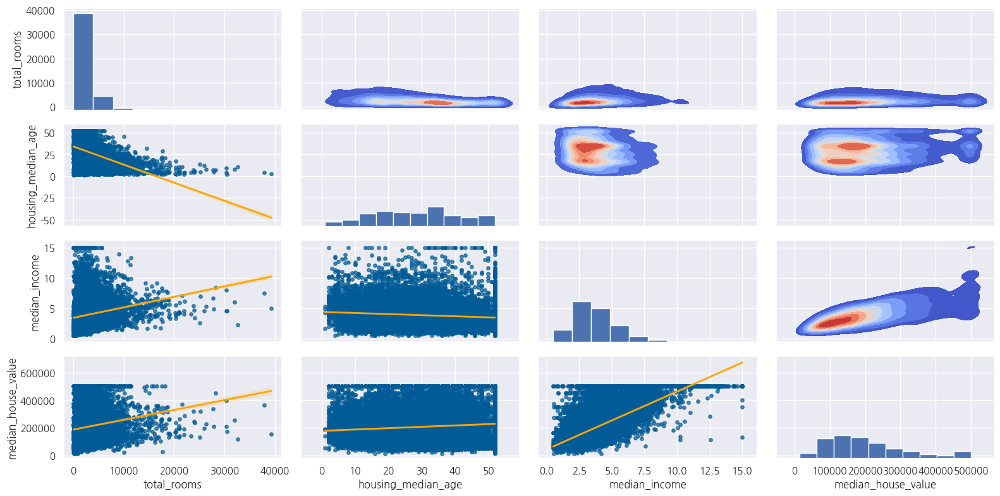
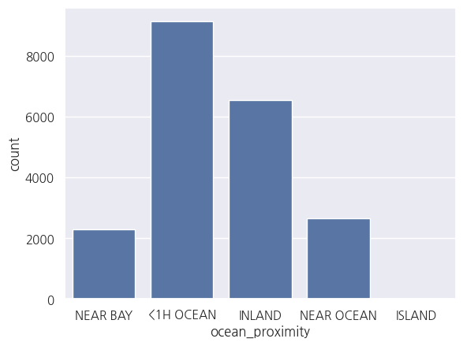
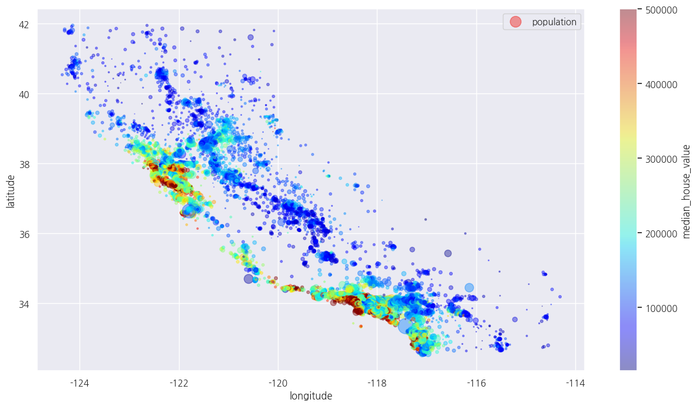
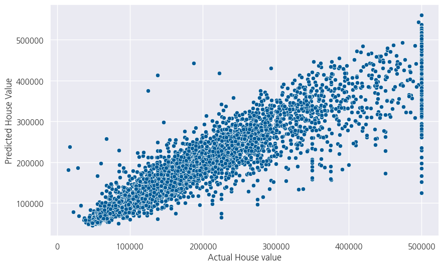
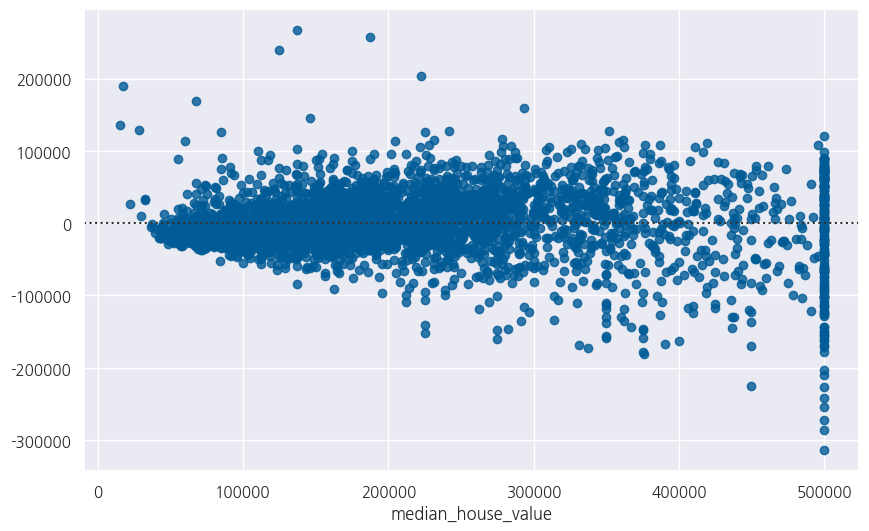
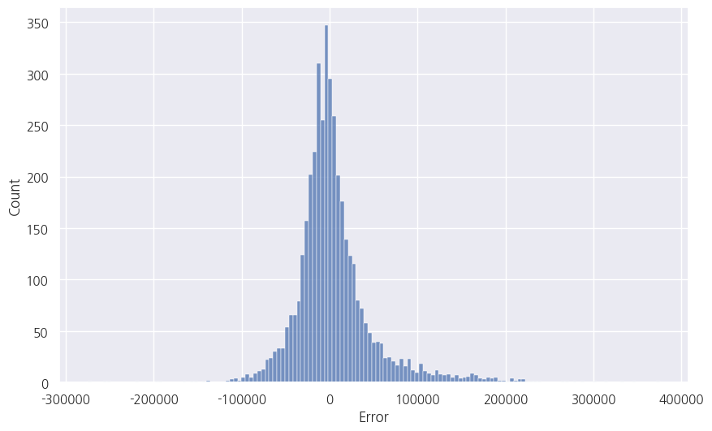

import pandas as pd
import numpy as np
import matplotlib.pyplot as plt
import seaborn as sns
sns.set()
import koreanize_matplotlib
from scipy.stats import skew
from sklearn.preprocessing import LabelEncoder, StandardScaler
from sklearn.model_selection import train_test_split
from sklearn.linear_model import LinearRegression
from sklearn.ensemble import RandomForestRegressor
from sklearn.metrics import r2_score, mean_squared_error
from sklearn.neighbors import KNeighborsRegressor
from sklearn.ensemble import GradientBoostingRegressor
from catboost import CatBoostRegressor
from xgboost import XGBRegressor
from lightgbm import LGBMRegressor다양한 모델로 살펴보는 캘리포니아 집값 예측(회귀)
다양한 모델로 살펴보는 캘리포니아 집값 예측(회귀)
데이터 읽어오기
data = pd.read_csv('data/housing.csv')
data.head()| longitude | latitude | housing_median_age | total_rooms | total_bedrooms | population | households | median_income | median_house_value | ocean_proximity | |
|---|---|---|---|---|---|---|---|---|---|---|
| 0 | -122.23 | 37.88 | 41.0 | 880.0 | 129.0 | 322.0 | 126.0 | 8.3252 | 452600.0 | NEAR BAY |
| 1 | -122.22 | 37.86 | 21.0 | 7099.0 | 1106.0 | 2401.0 | 1138.0 | 8.3014 | 358500.0 | NEAR BAY |
| 2 | -122.24 | 37.85 | 52.0 | 1467.0 | 190.0 | 496.0 | 177.0 | 7.2574 | 352100.0 | NEAR BAY |
| 3 | -122.25 | 37.85 | 52.0 | 1274.0 | 235.0 | 558.0 | 219.0 | 5.6431 | 341300.0 | NEAR BAY |
| 4 | -122.25 | 37.85 | 52.0 | 1627.0 | 280.0 | 565.0 | 259.0 | 3.8462 | 342200.0 | NEAR BAY |
data.columns.valuesarray(['longitude', 'latitude', 'housing_median_age', 'total_rooms',
'total_bedrooms', 'population', 'households', 'median_income',
'median_house_value', 'ocean_proximity'], dtype=object)data.info()<class 'pandas.core.frame.DataFrame'>
RangeIndex: 20640 entries, 0 to 20639
Data columns (total 10 columns):
# Column Non-Null Count Dtype
--- ------ -------------- -----
0 longitude 20640 non-null float64
1 latitude 20640 non-null float64
2 housing_median_age 20640 non-null float64
3 total_rooms 20640 non-null float64
4 total_bedrooms 20433 non-null float64
5 population 20640 non-null float64
6 households 20640 non-null float64
7 median_income 20640 non-null float64
8 median_house_value 20640 non-null float64
9 ocean_proximity 20640 non-null object
dtypes: float64(9), object(1)
memory usage: 1.6+ MB전처리(NaN, Missing Value)
data.isnull().sum()longitude 0
latitude 0
housing_median_age 0
total_rooms 0
total_bedrooms 207
population 0
households 0
median_income 0
median_house_value 0
ocean_proximity 0
dtype: int64data.describe()| longitude | latitude | housing_median_age | total_rooms | total_bedrooms | population | households | median_income | median_house_value | |
|---|---|---|---|---|---|---|---|---|---|
| count | 20640.000000 | 20640.000000 | 20640.000000 | 20640.000000 | 20433.000000 | 20640.000000 | 20640.000000 | 20640.000000 | 20640.000000 |
| mean | -119.569704 | 35.631861 | 28.639486 | 2635.763081 | 537.870553 | 1425.476744 | 499.539680 | 3.870671 | 206855.816909 |
| std | 2.003532 | 2.135952 | 12.585558 | 2181.615252 | 421.385070 | 1132.462122 | 382.329753 | 1.899822 | 115395.615874 |
| min | -124.350000 | 32.540000 | 1.000000 | 2.000000 | 1.000000 | 3.000000 | 1.000000 | 0.499900 | 14999.000000 |
| 25% | -121.800000 | 33.930000 | 18.000000 | 1447.750000 | 296.000000 | 787.000000 | 280.000000 | 2.563400 | 119600.000000 |
| 50% | -118.490000 | 34.260000 | 29.000000 | 2127.000000 | 435.000000 | 1166.000000 | 409.000000 | 3.534800 | 179700.000000 |
| 75% | -118.010000 | 37.710000 | 37.000000 | 3148.000000 | 647.000000 | 1725.000000 | 605.000000 | 4.743250 | 264725.000000 |
| max | -114.310000 | 41.950000 | 52.000000 | 39320.000000 | 6445.000000 | 35682.000000 | 6082.000000 | 15.000100 | 500001.000000 |
- 한 블록 내의 최대 침실이 6445개이고 평균 침실이 537임을 알 수 있습니다.
- 데이터가 왜곡된 것 같으므로 히스토그램을 통해 이를 확인하겠습니다.
plt.figure(figsize= (10, 6))
sns.histplot(data['total_bedrooms'], color = '#005b96', kde= True);
- 확실히 왜곡되어 있으므로 누락된 값은 블록 내 객실 수 중앙값으로 채웁니다.
data['total_bedrooms'] = data['total_bedrooms'].fillna(data['total_bedrooms'].median())EDA
plt.figure(figsize= (20, 8))
sns.heatmap(data.corr(numeric_only=True), annot= True, cmap='YlGnBu')
plt.show()
- 중위소득은 분명 가장 중요한 특징입니다.
sns.histplot(data['median_house_value'], color = '#005b96', kde= True);
data['median_house_value'].skew()0.9777632739098341- 우리의 목표 변수는 분명히 왜곡되어 있습니다. 따라서 로그 변환을 늦게 적용할 것입니다.
data.hist(bins = 30, figsize=(20, 15), color = '#005b96');
많은 기능이 왜곡되어 있다는 것을 분명히 알 수 있습니다. 따라서 나중에 기능 변환을 수행할 때 이 문제를 해결해야 할 것입니다.
grid = sns.PairGrid(data, vars=['total_rooms', 'housing_median_age', 'median_income', 'median_house_value'],
height=2, aspect = 2)
grid = grid.map_diag(plt.hist)
grid = grid.map_lower(sns.regplot, scatter_kws = {'s': 15, 'alpha': 0.7, 'color': '#005b96'},
line_kws = {'color':'orange', 'linewidth': 2})
grid = grid.map_upper(sns.kdeplot, n_levels = 10, cmap= 'coolwarm', fill = True)
plt.show()
어떻게 들여다봐도 문제가 많은 데이터..?, 범주형 변수도 같이 확인해보죠
sns.countplot(x = data['ocean_proximity']);
data.plot(kind="scatter", x="longitude", y="latitude", alpha=0.4,
s=data["population"]/100, label="population", figsize=(15,8),
c="median_house_value", cmap=plt.get_cmap("jet"),colorbar=True,
)
plt.legend()
plt.show()
특성공학
data['bed_per_room'] = data['total_bedrooms'] / data['total_rooms']X = data.drop(['median_house_value'], axis=1)
y = np.log(data.median_house_value) # 로그 변환특성 변환
skew_df = pd.DataFrame(X.select_dtypes(np.number).columns, columns= ['Feature'])
skew_df['Skew'] = skew_df['Feature'].apply(lambda feature: skew(X[feature]))
skew_df['Abs_Skew'] = skew_df['Skew'].apply(abs)
skew_df['Skewed'] = skew_df['Abs_Skew'].apply(lambda x: True if x > 0.5 else False)
skew_df| Feature | Skew | Abs_Skew | Skewed | |
|---|---|---|---|---|
| 0 | longitude | -0.297780 | 0.297780 | False |
| 1 | latitude | 0.465919 | 0.465919 | False |
| 2 | housing_median_age | 0.060326 | 0.060326 | False |
| 3 | total_rooms | 4.147042 | 4.147042 | True |
| 4 | total_bedrooms | 3.480888 | 3.480888 | True |
| 5 | population | 4.935500 | 4.935500 | True |
| 6 | households | 3.410190 | 3.410190 | True |
| 7 | median_income | 1.646537 | 1.646537 | True |
| 8 | bed_per_room | 6.316445 | 6.316445 | True |
skewed_columns = skew_df[skew_df['Abs_Skew'] > 0.5]['Feature'].values
skewed_columnsarray(['total_rooms', 'total_bedrooms', 'population', 'households',
'median_income', 'bed_per_room'], dtype=object)for column in skewed_columns:
X[column] = np.log(X[column])Encoding
encoder=LabelEncoder()
X['ocean_proximity']=encoder.fit_transform(X['ocean_proximity'])Scaling
X.head()| longitude | latitude | housing_median_age | total_rooms | total_bedrooms | population | households | median_income | ocean_proximity | bed_per_room | |
|---|---|---|---|---|---|---|---|---|---|---|
| 0 | -122.23 | 37.88 | 41.0 | 6.779922 | 4.859812 | 5.774552 | 4.836282 | 2.119287 | 3 | -1.920110 |
| 1 | -122.22 | 37.86 | 21.0 | 8.867709 | 7.008505 | 7.783641 | 7.037028 | 2.116424 | 3 | -1.859204 |
| 2 | -122.24 | 37.85 | 52.0 | 7.290975 | 5.247024 | 6.206576 | 5.176150 | 1.982022 | 3 | -2.043951 |
| 3 | -122.25 | 37.85 | 52.0 | 7.149917 | 5.459586 | 6.324359 | 5.389072 | 1.730434 | 3 | -1.690331 |
| 4 | -122.25 | 37.85 | 52.0 | 7.394493 | 5.634790 | 6.336826 | 5.556828 | 1.347086 | 3 | -1.759704 |
scaler = StandardScaler()
scaler.fit(X)
X = pd.DataFrame(scaler.transform(X), index= X.index, columns= X.columns)데이터 나누기
X_train, X_test, y_train, y_test = train_test_split(X, y, test_size= 0.2, random_state= 42)모델 생성
Linear Regression
lr = LinearRegression()
lr.fit(X_train, y_train)
predictions_lr = lr.predict(X_test)rmse = np.sqrt(mean_squared_error(y_test, predictions_lr))
r2 = r2_score(y_test, predictions_lr)
print('RMSE:', rmse)
print('R-square:', r2)RMSE: 0.3452750790518536
R-square: 0.632694341236971KNN
knn = KNeighborsRegressor()
knn.fit(X_train, y_train)
predictions_knn = knn.predict(X_test)rmse = np.sqrt(mean_squared_error(y_test, predictions_knn))
r2 = r2_score(y_test, predictions_knn)
print('RMSE:', rmse)
print('R-square:', r2)RMSE: 0.29601285396707333
R-square: 0.7300282680211424Random Forest
rf = RandomForestRegressor(n_estimators= 100)
rf.fit(X_train, y_train)
predictions_rf = rf.predict(X_test)rmse = np.sqrt(mean_squared_error(y_test, predictions_rf))
r2 = r2_score(y_test, predictions_rf)
print('RMSE:', rmse)
print('R-square:', r2)RMSE: 0.2333547290483749
R-square: 0.8322237954729605CatBoost
catboost = CatBoostRegressor(verbose= 0)
catboost.fit(X_train, y_train)
predictions_cb = catboost.predict(X_test)rmse = np.sqrt(mean_squared_error(y_test, predictions_cb))
r2 = r2_score(y_test, predictions_cb)
print('RMSE:', rmse)
print('R-square:', r2)RMSE: 0.2205112504809162
R-square: 0.8501838416230987XGBoost
xgboost = XGBRegressor()
xgboost.fit(X_train, y_train)
predictions_xgb = xgboost.predict(X_test)rmse = np.sqrt(mean_squared_error(y_test, predictions_xgb))
r2 = r2_score(y_test, predictions_xgb)
print('RMSE:', rmse)
print('R-square:', r2)RMSE: 0.23215147603571726
R-square: 0.833949552238219LightGBM
lgb = LGBMRegressor()
lgb.fit(X_train, y_train)
predictions_lgb = lgb.predict(X_test)[LightGBM] [Info] Auto-choosing row-wise multi-threading, the overhead of testing was 0.000159 seconds.
You can set `force_row_wise=true` to remove the overhead.
And if memory is not enough, you can set `force_col_wise=true`.
[LightGBM] [Info] Total Bins 2099
[LightGBM] [Info] Number of data points in the train set: 16512, number of used features: 10
[LightGBM] [Info] Start training from score 12.086494rmse = np.sqrt(mean_squared_error(y_test, predictions_lgb))
r2 = r2_score(y_test, predictions_lgb)
print('RMSE:', rmse)
print('R-square:', r2)RMSE: 0.23141697343233006
R-square: 0.8349986219828225Gradient Boosting
gbr = GradientBoostingRegressor()
gbr.fit(X_train, y_train)
predictions_gbr = gbr.predict(X_test)rmse = np.sqrt(mean_squared_error(y_test, predictions_gbr))
r2 = r2_score(y_test, predictions_gbr)
print('RMSE:', rmse)
print('R-square:', r2)RMSE: 0.2683061508710681
R-square: 0.7782015993119078모델 결정
CatBoost, XGBoost, LightGBM, RandomForest 성능은 다중 선형 회귀, knn, Gradient Boosting 능가하는 것으로 나타났습니다. 이제 이 네 가지 모델을 결합하여 최종 예측을 해보겠습니다.
final_predictions = (
0.25 * predictions_cb+
0.25 * predictions_rf+
0.25 * predictions_xgb+
0.25 * predictions_lgb
)rmse = np.sqrt(mean_squared_error(y_test, final_predictions))
r2 = r2_score(y_test, final_predictions)
print('RMSE:', rmse)
print('R-square:', r2)RMSE: 0.22021038654288916
R-square: 0.8505923788726266final_predictionsarray([10.89085559, 11.33213386, 13.05892063, ..., 13.12746721,
11.22409688, 12.03986915])최종 예측을 원래 규모로 되돌리려면 최종 예측의 지수를 취해야 합니다.
final_predictions = np.exp(final_predictions)
y_test = np.exp(y_test)pd.DataFrame({'Actual': y_test, 'Predicted': final_predictions.round(2)})| Actual | Predicted | |
|---|---|---|
| 20046 | 47700.0 | 53683.21 |
| 3024 | 45800.0 | 83460.93 |
| 15663 | 500001.0 | 469263.93 |
| 20484 | 218600.0 | 251029.05 |
| 9814 | 278000.0 | 262151.04 |
| ... | ... | ... |
| 15362 | 263300.0 | 229402.11 |
| 16623 | 266800.0 | 227579.82 |
| 18086 | 500001.0 | 502558.44 |
| 2144 | 72300.0 | 74914.06 |
| 3665 | 151500.0 | 169374.78 |
4128 rows × 2 columns
결과 확인
plt.figure(figsize= (10, 6))
sns.scatterplot(x= y_test, y= final_predictions, color= '#005b96')
plt.xlabel('Actual House value')
plt.ylabel('Predicted House Value')
plt.show()
plt.figure(figsize= (10, 6))
sns.residplot(x= y_test, y = final_predictions, color= '#005b96')
plt.show()
resid = y_test - final_predictions
plt.figure(figsize= (10, 6))
sns.histplot(resid)
plt.xlabel('Error');
오류의 분포가 정상적으로 보이기 때문에 우리 모델이 제대로 작동하고 있는 것입니다.